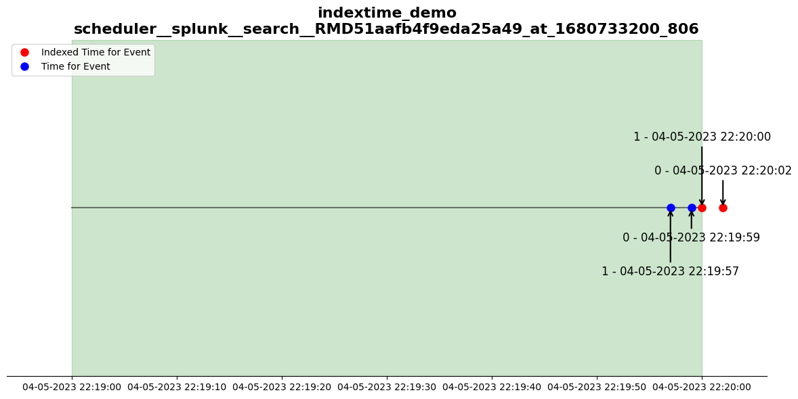

Code
#Code to detect and graph differences in recently ran searches
# Import required libraries
import time
import json
import splunklib.client as client
import splunklib.results as results
import matplotlib.pyplot as plt
import matplotlib.dates as mdates
from datetime import datetime, timedelta
# Function to connect to the Splunk service
def splunk_connect(base_url, port, splunk_account, splunk_password):
try:
# Connect to the Splunk service
service = client.connect(host=base_url, port=port, username=splunk_account, password=splunk_password)
print('Connected to Splunk instance: {}'.format(base_url))
print('-' * 90)
except Exception as e:
print('Error in Connecting to Splunk: {}'.format(e))
# Return the service object
return service
# Function to compare jobs
def compare_jobs(service,owner,graph):
# Get the list of search jobs
search_jobs = service.jobs.list()
# Loop through the search jobs
for job in search_jobs:
# If the job is a saved search and the owner matches the specified owner
if job['content']['isSavedSearch'] == '1' and job['access']['owner'] == owner:
# Initialize lists to store results
results_list = []
results_list_new = []
# Set the keyword arguments for the search job
kwargs = {"earliest_time": job['content']['earliestTime'],
"latest_time": job['content']['latestTime'],
"search_mode": "normal",
"output_mode": "json"}
# Get the results of the original job
job_results = job.results(output_mode='json')
# Parse the results and append them to the results list
for x in results.JSONResultsReader(job_results):
results_list.append(dict(x))
# Create a new job with the same search criteria
job_new = service.jobs.create(job['content']['eventSearch'],**kwargs)
# Wait for the new job to finish
while not job_new.is_done():
time.sleep(1)
# Get the results of the new job
job_results_new = job_new.results(output_mode='json')
# Parse the results and append them to the new results list
for y in results.JSONResultsReader(job_results_new):
results_list_new.append(dict(y))
# Compare the lengths of the results lists
if(len(results_list) != len(results_list_new)):
# Initialize lists to store issues
search_issue = []
results_indexed = []
results_time = []
# Add the search issue to the list
search_issue.append({
'sid': job['content']['sid'],
'label': job['content']['label'],
'earliest_time': job['content']['earliestTime'],
'latest_time': job['content']['latestTime'],
})
# Get the unique keys for the results
results_keys = [(d.get('_raw'), d.get('_indextime'), d.get('_time')) for d in results_list]
results_keys_new = [(d.get('_raw'), d.get('_indextime'), d.get('_time')) for d in results_list_new]
# Find the unique results in the new results list
unique_to_new = set(results_keys_new) - set(results_keys)
# print the unique results
if unique_to_new:
print('SEARCH: {} SID: {}'.format(job['content']['label'],job['content']['sid']))
print('RESULT: DIFFERENCE FOUND')
print('NOTE: This is indicative of a delay issue and resulted in missing events in the original search.')
print('-' * 10)
print('List of Missing Results')
print('-' * 10)
#format time and set in index
for key in unique_to_new:
formatted_indextime = datetime.utcfromtimestamp(int(key[1])).strftime('%Y-%m-%d %H:%M:%S')
results_indexed.append(formatted_indextime)
formatted_time = datetime.fromisoformat(key[2]).strftime('%Y-%m-%d %H:%M:%S')
results_time.append(formatted_time)
print(' _time={},_indextime={},_raw={}'.format(formatted_time,formatted_indextime,key[0]))
#graph the results
if graph == 'true':
plot_timeline(search_issue,results_indexed,results_time)
print('-' * 90)
else:
print('SEARCH: {} SID: {}'.format(job['content']['label'],job['content']['sid']))
print('RESULT: NO DELAY FOUND')
print('NOTE: Search results in original search and re-ran search match, no delay issue identified.')
print('-' * 90)
# Function to plot the timeline of the search issue
def plot_timeline(search_issue, results_indexed, results_time):
# Convert result issue timestamps to datetime objects
indextimes = [datetime.strptime(d, '%Y-%m-%d %H:%M:%S') for d in results_indexed]
times = [datetime.strptime(d, '%Y-%m-%d %H:%M:%S') for d in results_time]
# Set the title and subtitle for the plot
title = search_issue[0]['label']
subtitle = search_issue[0]['sid']
# Get the start and end dates of the search issue and remove timezone and microseconds
start_date = datetime.strptime(search_issue[0]['earliest_time'], '%Y-%m-%dT%H:%M:%S.%f%z')
start_date = start_date.replace(microsecond=0, tzinfo=None)
end_date = datetime.strptime(search_issue[0]['latest_time'], '%Y-%m-%dT%H:%M:%S.%f%z')
end_date = end_date.replace(microsecond=0, tzinfo=None)
# Create a figure and axis for the plot
fig, ax = plt.subplots(figsize=(12, 6))
# Plot the base timeline
ax.plot([start_date, end_date], [0, 0], color='black', alpha=0.5)
# Fill the area between the start and end dates
ax.fill_between([start_date, end_date], -0.5, 0.5, color='green', alpha=0.2)
# Calculate the maximum difference between indextime and start_time
max_difference = max([abs((date - start_date).total_seconds()) for date in indextimes] +
[abs((date - end_date).total_seconds()) for date in indextimes])
# Set the buffer based on the maximum difference
buffer = timedelta(seconds=max_difference * 0.1)
# Set the x and y limits for the plot
ax.set_xlim(start_date - buffer, end_date + buffer)
ax.set_ylim(-0.5, 0.5)
# Remove spines and y-axis
ax.spines['left'].set_visible(False)
ax.spines['right'].set_visible(False)
ax.spines['top'].set_visible(False)
ax.yaxis.set_visible(False)
# Plot the indexed markers and annotations
for idx, date in enumerate(indextimes):
ax.plot(date, 0, 'ro', markersize=8, label='Indexed Time for Event')
ax.annotate('{} - {}'.format(idx,date.strftime('%m-%d-%Y %H:%M:%S')), xy=(date, 0), xytext=(date, 0.1 + (idx % 2) * 0.1),
arrowprops=dict(arrowstyle='->', lw=1.5),
fontsize=12, ha='center')
#plot the time markers and annotations
for idx, date in enumerate(times):
ax.plot(date, 0, 'bo', markersize=8, label='Time for Event')
ax.annotate('{} - {}'.format(idx,date.strftime('%m-%d-%Y %H:%M:%S')), xy=(date, 0), xytext=(date, -0.1 + (idx % 2) * -0.1),
arrowprops=dict(arrowstyle='->', lw=1.5),
fontsize=12, ha='center')
# Set the title, x-axis formatter, and x-axis locator
ax.set_title('{}\n{}'.format(title,subtitle), fontsize=16, fontweight='bold')
ax.xaxis.set_major_formatter(mdates.DateFormatter('%m-%d-%Y %H:%M:%S'))
ax.xaxis.set_major_locator(mdates.AutoDateLocator())
# Create the legend and display unique items
handles, labels = ax.get_legend_handles_labels()
by_label = dict(zip(labels, handles))
ax.legend(by_label.values(), by_label.keys(), loc='upper left')
# Adjust layout and display the plot
plt.tight_layout()
plt.show()
def banner():
print('-' * 90)
print('-' * 90)
print(' _____ _____ _____ _ _ _____ _____ _____ _____ _____ _____ _____ _ _ _____')
print(' | \ |____ | |___| \_/ | \ |____ | |____ | | | \ / |____')
print(' |____/ |____ |____ | | | |____/ |____ | |____ |_____ | __|__ \/ |____')
print(' Splunk Log Delay Detector v1.0')
print('-' * 90)
print('-' * 90)
def main():
#get config
with open('config.json') as f:
data = json.load(f)
splunk_account = data['splunk_account']
splunk_password = data ['splunk_password']
base_url = data['base_url']
port = data['port']
owner = data['owner']
graph = data['graph']
#show banner
banner()
#connect to splunk
service = splunk_connect(base_url, port, splunk_account, splunk_password)
#check and compare all jobs by owner
compare_jobs(service,owner,graph)
if __name__ == "__main__":
main()------------------------------------------------------------------------------------------
------------------------------------------------------------------------------------------
_____ _____ _____ _ _ _____ _____ _____ _____ _____ _____ _____ _ _ _____
| \ |____ | |___| \_/ | \ |____ | |____ | | | \ / |____
|____/ |____ |____ | | | |____/ |____ | |____ |_____ | __|__ \/ |____
Splunk Log Delay Detector v1.0
------------------------------------------------------------------------------------------
------------------------------------------------------------------------------------------
Connected to Splunk instance: 192.168.42.138
------------------------------------------------------------------------------------------
SEARCH: indextime_demo SID: scheduler__splunk__search__RMD51aafb4f9eda25a49_at_1680733200_806
RESULT: DIFFERENCE FOUND
NOTE: This is indicative of a delay issue and resulted in missing events in the original search.
----------
List of Missing Results
----------
_time=2023-04-05 22:19:59,_indextime=2023-04-05 22:20:02,_raw=critical ransomware L0OdbQcw6y
_time=2023-04-05 22:19:57,_indextime=2023-04-05 22:20:00,_raw=critical ransomware 3X1K0CTmxE
------------------------------------------------------------------------------------------
SEARCH: indextime_demo SID: scheduler__splunk__search__RMD51aafb4f9eda25a49_at_1680566280_768
RESULT: NO DELAY FOUND
NOTE: Search results in original search and re-ran search match, no delay issue identified.
------------------------------------------------------------------------------------------